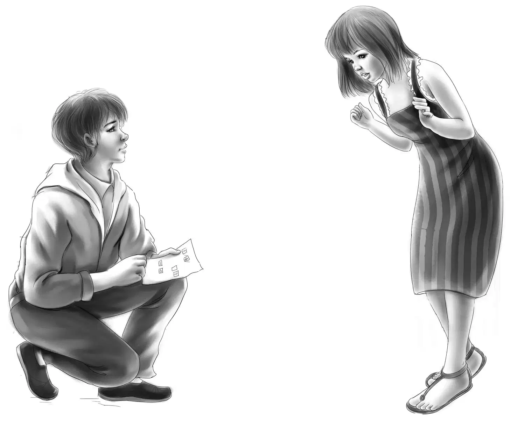
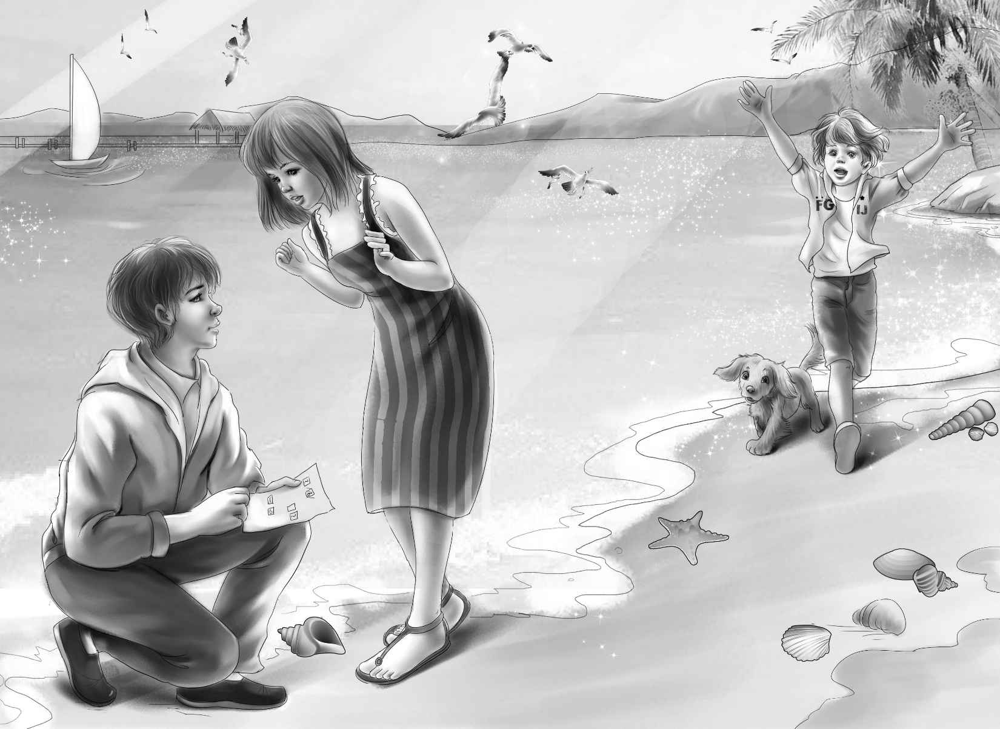
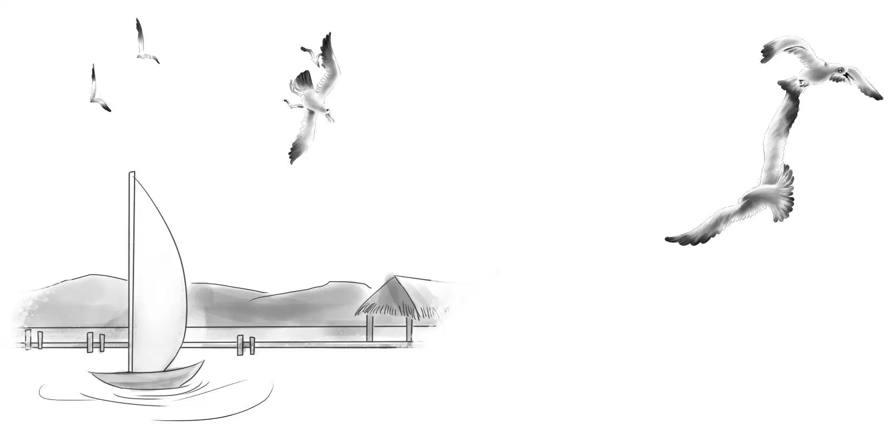

A Midnight Visitor

当天晚上，尽管新椅子暂时还不能用，大家仍然在海滩上玩得非常开心。晚饭后，全家人坐在海滩上欣赏了很久夕阳。
海鸥从头顶飞过，停在旁边的岩石上。
亨利猛然开口问道：“奇怪，怎么感觉有点困了？”
“海洋空气是容易让人犯困，”奥登先生说，“你们要是困了就去睡吧！”
事实上，这家人果然九点钟就上床睡觉了，并很快进入了梦乡。
康利小镇上的钟依然恪守职责——敲了10下，11下，12下……就在此时，望望又开始呜咽了，它背上的毛发和颈毛全都竖了起来，接着开始大声咆哮。
“望望，别叫了，”班尼说，“你要是每天半夜都这么大叫，我们就只能先送你回家了。你这样我们可吃不消。”
可望望还是叫个不停。
“是不是又有人在小屋里做饭了？”亨利问道。
“小屋里没人，”班尼说，“要真有人去那里，我们早就听到他踩在小石子上的嘎吱嘎吱声了。”
“而且，整间屋子都被木板钉了起来，”杰西补充道，“门是锁着的，窗户也打不开，里面不可能住人。”
“那不一定，来人也可以把木板拆下来，从窗户钻进去啊！”亨利说，“到了晚上只要再把木板钉回去就行了。明天咱们就去小屋查看一下。”班尼恨不得现在立刻就动身，可这时望望突然安静了下来，它最后叫了两声，便乖乖去睡觉了。
“你真是一只奇怪的小狗，”班尼说，“天亮之前不许再叫唤了哦！”
而杰西和维莉仍然久久不能入睡，不过并不是因为望望。杰西关上灯，朝窗外看了看。在月光下，她看到一个女人正蹑手蹑脚地走远，只见那人轻轻地走向海滩边的草地上，并没有发出嘎吱嘎吱的脚步声。
杰西低声唤来维莉，两人一起往窗外望去。
“是个女人！”维莉悄声问，“她在干吗？”
“她已经走远了，”杰西说，“我们不用到楼上去叫班尼了，反正望望现在也没叫了。维莉，快看，那人先是在灌木丛后躲了一会儿才走到街上呢！”
街上空荡荡的，杂货店里也是漆黑一片。片刻之后，那个女人便轻悄悄走远，很快就消失不见了。两个女孩重新回到床上，不一会儿便进入了梦乡。
天快亮的时候，望望又低声叫了起来，只是大家睡得都很熟，没有被吵醒。
到了早晨，杰西把大伙儿一一唤醒，去岩石桌上吃早餐。
“我认得我的座位，”班尼抢着说，“这儿写着B呢！”
吃完早餐后，两个女孩把昨晚女人的奇怪行踪告诉了大家。
奥登先生说：“咱们最好去仔细查看一下那座小房子，检查每块木板，看有没有松动的。”
奥登一家从小白屋最前面的窗户开始检查，发现到处封闭得都很严实——门是紧锁的，窗户上的木板也没有松动。望望在一旁安静地蹓跶，没发出任何声音。
“奇怪，”杰西说，“望望这次没有叫唤。”
“说明这里没什么异样。”奥登先生说，“屋子显然封得非常严密。”
“嘿，你们快来看！”亨利突然说道。他发现沙滩上飘着一张纸片，上面画着很多小方格，方格里要么是数字，要么是奇怪的字母，要么是问号。

“这是什么？我一点都看不懂。”杰西说。
“我也是。”亨利说，“不过写这些东西的人一定很聪明，我觉得它像大学里的科学运算公式，可惜我看不懂，也可能是我还没学到那里。”
“看来是有人在做实验，”维莉缓缓地说，“就是科学实验什么的……”
“一点都没错！”亨利赞许地冲妹妹笑道，“可是这和半夜饭菜的香味，还有你们昨晚看到的女人，有什么关联呢？”
“亨利，先把纸条收起来吧！”奥登先生说道。大家开始向岩石边走去。
这时，维莉的话题已经转向了贝壳。
“海滩上全是贝壳呐！”班尼大声说。
他从岩石上跳到沙滩上，“我认得这个，它是蛤蜊的壳，而这是扇贝的壳。”
“这只贝壳长得好奇怪，”杰西说，“像五只手指。”
“那是猫爪贝。”奥登先生说，“你们找找看，究竟能找到多少种贝壳。”
对于贝壳，奥登先生就像对鸟类和鲜花一样精通。
最后，大家找到了蜗牛贝、拖鞋贝，还有各种金色和银色的海贝……共计14种之多。
“海草也很多，不过没有谁想收集这些吧！”班尼说，“也许那个凶巴巴的男孩会感兴趣？”
“这里让我想起了蓝色海湾，”维莉笑着说，“我们在那儿吃了好多海贝呢！”
“在这儿游泳可比在蓝色海湾安全多了，”亨利说，“这里可没有鲨鱼。”
杰西踟躇道：“可惜我们没带游泳衣来，再买新的又太不划算了。”
“有什么不划算的，”爷爷说，“反正你们也该买新泳衣了。再说，到了海滩却不游泳，这就太说不过去啦！”
“说不定豪尔先生那儿有泳衣卖，”杰西说，“他店里好像什么都有。”
一想到在豪尔的迷你小店里，泳衣和食物混杂在一起的情景，杰西就忍不住笑了起来。
他们把贝壳放到石桌上，走进了杂货店。
豪尔先生说：“我这儿没有泳衣，不过沿着这条街往下走，有家女店主开的帽子店，那里有泳衣卖。你们一出门就能看到商店的标志。”
班尼说：“我进门的时候就看到了‘帽子’两个字——咱们要去帽子店买泳衣吗？真有趣！”
“有什么奇怪的？”豪尔先生笑着说，“还有人到我的杂货店来买油漆和墙纸呢！”
奥登一家走出小店，沿着街道信步向前走去。
码头就在旁边，班尼一把拉过亨利去看来往的船只。“快看那艘船，”他叫道，“那艘叫‘库克二号’的船多漂亮啊！”
亨利说：“像这么小巧的船，估计一个人就驾驭得了。班尼你说得没错，它的确很漂亮。”
正在这时，杰西和维莉大声召唤兄弟俩过去——女孩子的兴趣在泳衣，而不是船只。爷爷和她们一起等到男孩们集合过来后，大家径直来到帽子店，只见橱窗里摆放着漂亮的夏天帽子，还有一套蓝色的泳衣。
“杰西，要是尺码没问题的话，这套泳衣对你来说再合适不过了。”亨利说，“而班尼想要红色的泳裤，没错吧？”
“那当然，”班尼说，“红色是我的专用色嘛！”
看到这一大家子人，帽店的女店主笑盈盈地迎了上来，并介绍自己是罗思夫人。
亨利不经意地望向窗外，突然发现那个黑眼睛男人正好经过。
“您认识那个人吗？”亨利问道。
“当然认识，他叫汤姆·库克。”
“他是干什么的？”奥登先生问。
“说起来他应该算是个渔夫，不过打鱼赚不了什么钱，他就揽了各种杂七杂八的活儿，据说他卖过龙虾，还出租过夏日度假屋，赚了不少钱呢！”
“真看不出来，”亨利说，“他看起来似乎很穷。”
“这吝啬鬼把每个子儿都存了起来，”罗思夫人说，“一分钱都舍不得花。他有艘很漂亮的船，可连他的儿子都不准动——实际上他儿子已经17岁，不算小啦。”
一个念头猛地闪过班尼的脑海：也许他就是库克船主——漂亮的“库克二号”就是属于这个黑眼睛男人的。不过班尼并没把自己的想法说出来。
其实，亨利也有同样的想法。他们第一天见到豪尔先生并向他租赁灯塔时，豪尔先生就说过，有个叫库克的男人买下了夏天用的室外厨房——也许这就是另一条线索。
“这么说，库克先生真不算好爸爸。”杰西感慨道。
“说的是呢，库克先生的儿子经常偷偷开船出去，人们说他总是趁天黑后出海，还说他脑子里充满了各种没法理解的奇思怪想，因为他每次从海上回来都会带些古怪的玩意儿，从瓶子之类的小东西到水桶之类的大家伙……反正我听到的就是如此。”
“他脑子里到底在想些什么啊？”班尼纳闷道。
“那我是一丁点儿都不晓得的。”罗思夫人说，“他每次都会将船开到没人看见的地方，他爸爸也一直被蒙在鼓里。哈，真不知道他是怎么对他爸隐瞒偷偷出海这事儿的！”
“我相信总有一天他爸爸会发现的，”班尼说，“到时候他就有大麻烦啦！”
“麻烦？”罗思夫人叫了起来，“库克先生和他儿子的麻烦已经够多了。库克夫人倒总是护着儿子，可父亲和儿子之间基本上就不怎么讲话了。”
“怎么会闹成这样？”奥登先生问。
“要知道那孩子聪明得很，16岁就高中毕业了，可之后就无所事事了，他爸既不让儿子这么小就工作，嫌丢人，又不让那孩子离家去上大学。”
“我的天！”班尼叫道，“他儿子就是我们在杂货店看到的凶巴巴的男孩，而野蛮的黑眼睛男人就是他老爸！这样一来就很说明问题了，对吧爷爷？”
“是的，班尼。而且咱们一定要有所行动了，要不然他们俩肯定会麻烦不断。”
“您是说‘咱们’吗？”亨利惊讶地问。
“没错，是‘咱们’！”奥登先生笑着回答。
